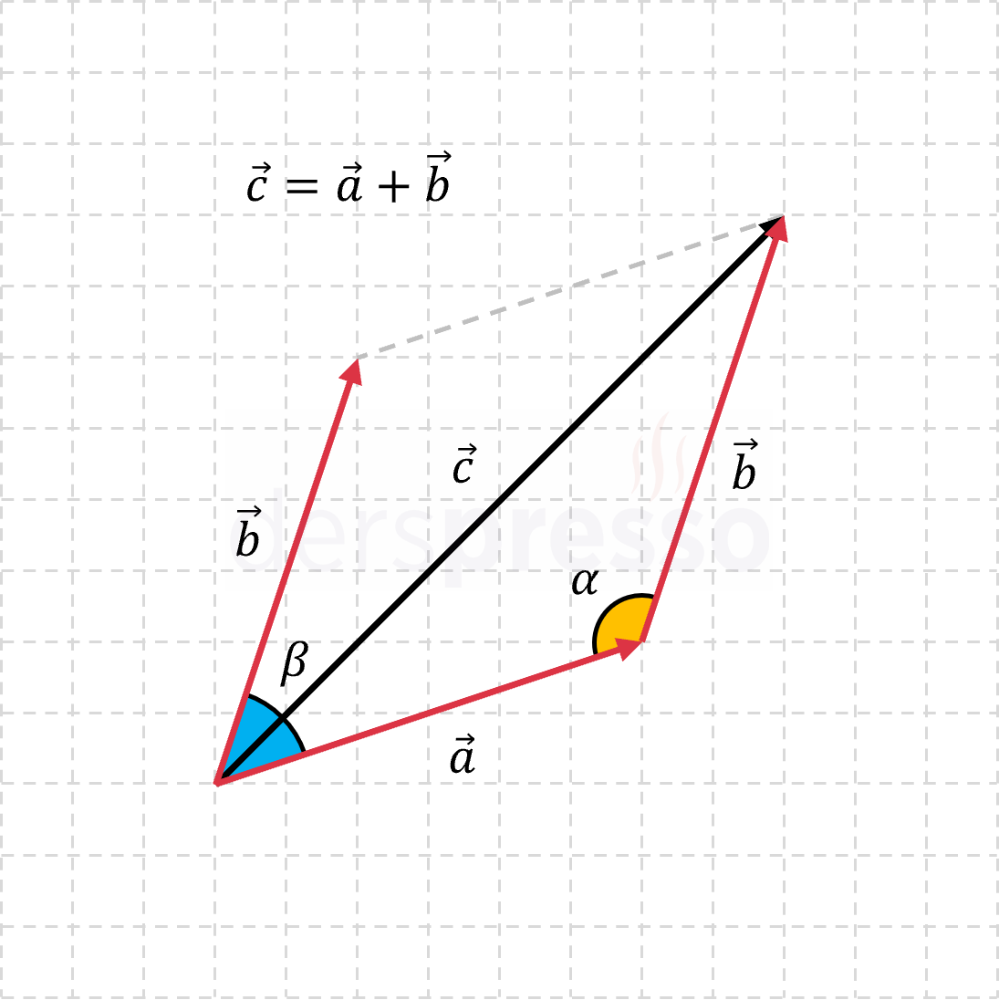
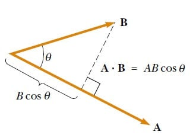
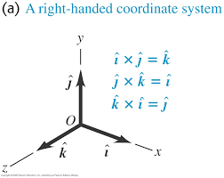

Vektörler, sadece sayısal büyüklükleri (şiddet) değil, aynı zamanda doğrultu ve yönleri de olan fiziksel niceliklerdir. Kuvvet, hız, ivme ve yer değiştirme gibi büyüklükleri ifade etmek için kullanılırlar. Başlangıç noktası, yönü ve büyüklüğü olan yönlendirilmiş doğru parçalarıyla (ok işareti) gösterilirler


